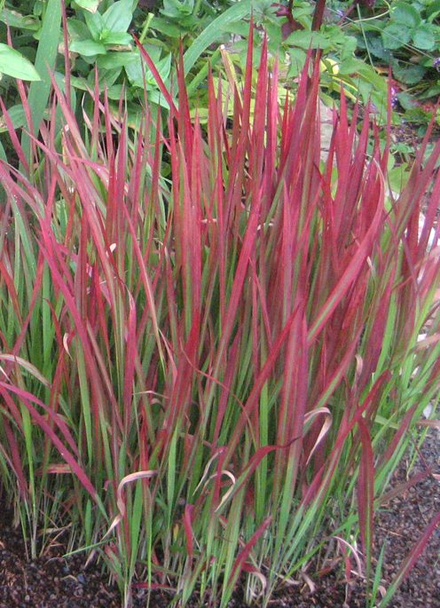

छीरThatch Grass
Imperata cylindrica · Poaceae · FLR-0138

- Scientific name
- Imperata cylindrica (L.) Raeusch.
- Family
- Poaceae
- Hindi
- छीर
- Status here
- native
- IUCN
- not evaluated
- Review
- audited and independently read
When to look कब देखें
Present all year.
Uses and possibilities उपयोग और संभावनाएँ
Drawn from the documented uses in the profile below, where each is labelled traditional, current or a research lead. All uses →
छीर / Thatch Grass
Imperata cylindrica (L.) Raeusch. — Poaceae
छीर — एक लंबी, सीधी घास जो मैदानों, परती ज़मीन और सड़कों के किनारे उगती है। तने सफेद, चिकने, सख़्त, एक-दो मीटर तक लंबे। पत्तियाँ संकरी और तीखी धार वाली। सितंबर-नवंबर में सफेद-चाँदी रंग के फूल खिलते हैं जो दूर से दिखते हैं। पत्तियों से रस्सी, चटाई और झाड़ू बनाई जाती है। पर यह घास बहुत कड़ी, गहरी जड़ें रखने वाली, और पशु-चारण में कम मूल्य की होती है।
Quick Identification त्वरित पहचान
| Feature | Description |
|---|---|
| Height | 0.8–1.5 m tall, erect, in dense clumps |
| Stems | Solid, not hollow, slightly waxy, pale greenish-white, smooth surface |
| Leaves | Linear, 30–60 cm long, 0.8–1.5 cm wide, margins finely serrate and sharp |
| Inflorescence | Dense cylindrical spike (2–5 cm long), silver-white with silky appearance |
| Roots | Extensive rhizomes, creating dense mats; difficult to uproot |
Field tip: Look for dense clumps of waxy, white-stemmed grass standing 0.8–1.5 m tall with fine, serrate-edged leaves. In late September to October, the characteristic silver-white cylindrical flower spikes are unmistakable and visible from a distance. The leaves, when folded, reveal a pale underside.
Morphology आकारिकी
Biometrics (typical measurements in the Gangetic plain):
| Measurement | Range |
|---|---|
| Plant height | 0.8–1.5 m |
| Stem diameter | 3–6 mm |
| Leaf length | 30–60 cm |
| Leaf width | 0.8–1.5 cm |
| Spike length | 2–5 cm |
| Spike diameter | 0.5–1.0 cm |
Root system: Extensive rhizomatous system with deep, fibrous roots forming dense mats. Rhizomes are pink to white, creeping horizontally just below the soil surface, capable of fragmenting and regenerating.
Stems (culms): Solid, not hollow like most grasses, smooth, waxy, giving a white-powdered appearance. Nodes are indistinct. The solid stem provides structural rigidity suitable for thatching.
Leaves: Linear, tapering, margins finely serrate (like a saw); the cutting edges can cause small lacerations on bare skin. Midrib is pale, prominent on the underside. Sheaths clasp the stem; the ligule is hairy.
Inflorescence: A compact, dense, cylindrical spike (2–5 cm) composed of many small spikelets. Each spikelet is surrounded by long silky hairs, creating the characteristic silvery appearance. Wind-pollinated. Appears September–November.
Seeds: Very small, surrounded by silky hairs that aid wind dispersal. Germination is erratic; many seeds do not survive.
हिंदी: तना ठोस, सफेद-पाउडर जैसा। पत्तियाँ तीखी धार। फूल सितंबर-नवंबर में सफेद-चाँदी।
Ecological Role पारिस्थितिक भूमिका
A perennial grass of tropical and subtropical grasslands, native to Asia and Africa, and now pantropical. Imperata cylindrica is a pioneer colonizer of disturbed land, degraded pastures, and fallows. It establishes rapidly on bare soil or after disturbance (burning, ploughing, erosion) where other vegetation has been removed or suppressed. Once established, the dense rhizomatous mat resists further disturbance and excludes most other plants.
The plant is low in palatability for livestock; cattle and buffalo prefer other grasses. In regions where Chhir dominates a grassland, it indicates either recent disturbance or long-term neglect. The grass does not prevent soil erosion as effectively as deeply-rooted perennial legumes or shrubs, though the root mat provides some stabilization.
The clumps provide shelter for ground-dwelling insects, small reptiles, and small mammals. The silky seeds are dispersed by wind and can travel considerable distances.
हिंदी: यह घास उजाड़ जगहों पर जल्दी उग जाती है। पशु इसे अच्छी तरह नहीं खाते। गहरी जड़ें — जो बार-बार जुताई से नष्ट नहीं होतीं।
Life Cycle / Phenology जीवन चक्र
Imperata cylindrica is a perennial grass — it does not die and regrow annually but persists for years in the same location, expanding by rhizome spread.
| Month | State | हिंदी |
|---|---|---|
| Jan–Feb | Dormant; dead culms standing dry | सूखे तने खड़े |
| Mar–Apr | New shoots emerging from rhizomes | नई कोंपलें |
| May–Jul | Active growth; green foliage | तेज़ वृद्धि; हरा |
| Aug–Sep | Full height; preparing to flower | पूरी ऊँचाई |
| Sep–Nov | Flowering — silvery spikes prominent | चाँदी-सफेद फूल |
| Dec | Seeds dispersed; culms drying | बीज उड़े; तने सूख रहे |
Harvesting: Traditionally harvested in November–December after flowering. Leaves are cut by hand using a hooked tool or sickle. Rhizomes persist and regrow the following season.
हिंदी: बारहमासी घास। बसंत में नई निकलती है, शरद में फूल, सर्दी में काटते हैं।
Agricultural / Human Relevance कृषि और मानव संबंध
Thatching material. The solid stems and tough leaves are cut in winter, dried, and used for thatching roofs of cattle sheds, temporary structures, and in traditional rural construction. The material is water-resistant and durable, lasting 3–5 years in a roof before requiring replacement. The thatch is laid in overlapping layers, secured with twine or rope.
Basketry and weaving. Dried leaves are woven into baskets, mats, and flat trays. The leaves are flexible when freshly dried and become brittle if stored too long. Baskets woven from chhir are light and used for storing grain, vegetables, and household items.
Cordage. In some regions, leaves are twisted into rope or twine for binding bundles of thatch or securing loads.
Grazing value. Low palatability; livestock avoid it. Indicates a degraded pasture where better forage grasses have been lost.
Ecological management. In some regions, Imperata cylindrica dominates after the loss of forest or after over-grazing. Ecological restoration efforts aim to re-establish diverse perennial grasses and legumes, suppressing the monoculture of chhir.
हिंदी: छीर की छप्पर बहुत टिकाऊ होती है। पत्तियों से चटाई, टोकरी, जाता बनते हैं। पशु इसे कम खाते हैं।
Expected Locally स्थानीय रूप से अपेक्षित
Not a field record. Written from published accounts for eastern Uttar Pradesh. No confirmed local sighting yet — if you have seen it, that is what the atlas needs.
अभी तक स्थानीय पुष्टि नहीं। यह विवरण प्रकाशित स्रोतों से है, किसी अवलोकन से नहीं।
Expected in grasslands, fallow land, and wasteground throughout Basti district. The silvery flower spikes in autumn are easily visible and diagnostic. Local knowledge of its use for thatch and basketry would be valuable to record.
Distribution वितरण
Global range: Native to South and Southeast Asia; now pantropical due to human dispersal and favorable conditions.
In India: Widespread in the Gangetic plains, the Deccan, and coastal areas, particularly in disturbed lands and secondary grasslands.
In Uttar Pradesh: Common in fallow land, grasslands, and wasteground throughout the state.
In Basti district / eastern UP: Expected in grasslands, canal margins, and fallow land throughout the district.
Research Questions शोध प्रश्न
Anyone can investigate these | कोई भी इन प्रश्नों की जाँच कर सकता है
- Where are the largest patches of chhir near your village? / आपके गाँव के पास सबसे बड़े छीर के कौन से पैच हैं? — GPS and area estimate. Do they expand or contract year to year?
- Who still uses chhir for thatching or basketry? / कौन छीर से छप्पर या चटाई बनाता है? — Interview elders and basket-makers. Document the process.
- Do cattle or other livestock eat chhir? — Observe grazing animals in an area with chhir; note whether they browse it.
- Which insects live in chhir clumps? — Beat the stems and collect insects on a white cloth; identify what falls out.
- Can you dry and thatch a small structure with chhir leaves? — Document the collection, drying, and thatching process; note longevity and maintenance required.
Similar Species मिलती-जुलती प्रजातियाँ
Eastern UP has several tall grasses that can be confused with I. cylindrica:
| Species | How to tell apart | हिंदी |
|---|---|---|
| Munja Grass (Saccharum munja) | Hollow stem; larger leaves (1.5–2 cm wide); larger, feathery plume (30–60 cm) | मूँज — खोखला तना; पूँछ बड़ी |
| Saccharum spontaneum (Kaans) | Hollow stem; smaller, more open plume; common on river sandbanks | काँस — खोखला तना; छोटा फूल |
| Phragmites australis (Reed / Narkat) | Hollow, thick stem; taller (3–4 m); more purplish plume; grows in water | नरकट — खोखला, मोटा तना |
Field rule: Solid stem + white-waxy surface + narrow serrate-edged leaves + dense cylindrical silvery spike in October = Imperata cylindrica (thatch grass).
Taxonomy & Classification वर्गीकरण
Original description. Originally described by Linnaeus as Saccharum cylindricum and reclassified as Imperata cylindrica by Raeuschel. The genus Imperata contains about 5 species, mostly in tropical grasslands.
Subspecies. Monotypic — no subspecies are currently recognised.
Family and order placement. Poaceae, subfamily Panicoideae, tribe Andropogoneae. The genus is part of the diverse group of Old World tropical grasses.
Phylogenetic notes. Imperata cylindrica is closely related to Saccharum and Erianthus, all wind-pollinated tropical grasses with similar inflorescence structures.
IUCN status rationale. Not evaluated. Widespread with no conservation concerns; if anything, it is over-abundant in many regions.
Photo Gallery फोटो गैलरी
Photos needed आवश्यक फोटो
- [ ] Dense clump of tall grass with pale stems (फूल से पहले)
- [ ] Silvery flowering spikes in September–October (फूल)
- [ ] Harvested leaves and stems for thatching
References संदर्भ
- Raeuschel, E.A. (1797). Nomenclator Botanicus. Wittenberg.
- Hooker, J.D. (1897). Flora of British India, vol. 7. L. Reeve & Co., London.
- Bor, N.L. (1960). The Grasses of Burma, Ceylon, India and Pakistan. Pergamon Press.
- Noltie, H.J. (2000). Flora of Bhutan, vol. 3. Royal Botanic Garden, Edinburgh.
- Botanical Survey of India — Flora of Uttar Pradesh (2012).
- GBIF Occurrence Data — Imperata cylindrica, India (2010–2026).
Source file: species/flora/grasses/thatch_grass.md